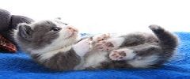

枪猎犬 活泼有亲和力、温顺 家族种类 指示猎犬（威马猎犬,短毛指示猎犬）、激飞猎犬（威尔斯激飞猎犬,英国激飞猎犬）、 寻回猎犬（拉布拉多,金毛犬） 狩猎犬组 枪猎犬的祖先 有鹰的眼睛、熊的力量 阿富汗猎犬、腊肠犬、比格猎犬、寻血猎犬 工作犬组 从事狩猎以外的各种劳动作业的犬 强壮的躯体、持久的耐力、忠实勤劳 纽芬兰犬、罗威纳犬、藏阿拉斯加雪橇犬、西伯利亚雪橇犬、大白熊犬 梗犬组 多产于英国 家族种类 猎狐梗、湖畔梗、曼彻斯特梗、牛头梗 玩赏犬组 体型娇小、聪明伶俐 被毛华丽、善解人意 吉娃娃、博美犬、北京犬、西施犬、哈巴狗、中国冠毛犬 家庭犬组 涵盖种类比较多元化 无法按照常规方法分类 松狮犬、贵宾犬、中国沙皮犬、英国斗牛犬、拉萨犬 牧羊犬组 由工作犬派生出来的一个新生组别 拥有非常高的智商和敏锐的洞察力 德国牧羊犬、喜乐缇牧羊犬、苏格兰牧羊犬、昆明犬 宠物猫  性格贪睡、任性、爱干净、反应和平衡首屈一指、通过叫声与主人对话、能预感死期。 更多内容 宠物鸟 可分为涉禽类、游禽类、陆禽类、攀禽猛禽类、鸣禽类、走禽类、海洋性鸟类、鸠鸽类。 更多内容 宠物鱼 可分为热带海水鱼、热带淡水鱼（灯类品种，神仙鱼系列）、温带淡水观赏鱼（红鲫鱼，中国金鱼，日本锦鲤）。 更多内容
1．陪伴 （1）陪伴独居老人 （2）年轻人的生活伴侣 （3）孩子的玩伴 2．有益于健康据美国医学家试验研究证明，饲养宠物可使入易于入静放松、脉搏变慢，高血压患者血压明显降低。 3．生活助理 充满灵性的宠物经过训练还可以扮演更多的角色，是主人生活中的助手。 4．保障安全 犬狩猎、看门、畜牧等 猫捕鼠 鸟属于农林益鸟，笼养鸟还可作有毒气体的“报警器”。 5．培养责任心，爱心和社交能力 兴奋性的培养主要是通过玩耍、尤其是通过衔物训练来进行。 孩子与宠物正确相处，培养他们与他人/动物建立友谊和情感；建立忠诚和信赖；建立自己的自信和责任心。 犬被心理学家广泛地用于医治或帮助有问题的孩子或成人。 6．其他 工作（导盲、军警犬） 饲养宠物，既可陶冶情操，还可增长知识。 国际交往。 通过出口某些宠物（如金山珍珠鸟、灰文鸟、牡丹鹦鹉、金鱼、金丝猴等）换取外汇。